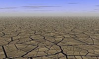
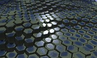
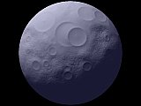
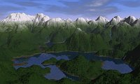

{kind=link}

| Script |
Description |
Related
secondary height fields |
Example |
| canyon.pov |
Stratified brown-reddish ground,
with grass on low slope areas and a water plane at low altitude for
filling up the canyon bed. |
- |
|
| cracknet_bumptest.pov |
Ground plane textured with the
current height field, used as a "normal map" and infinitely repeated. |
- |
 |
| cracknet_nobump.pov |
The main height field is used as
a background, ground_map.png
is used as the foreground. |
ground_map.png:
ground cracks provided by a secondary height field. It is
not repeated, and being in the foreground where the details are more
obvious, it's preferable to use a huge map. |
|
| cracknet.pov |
The main height field is used a
background, ground_map.png is
a tiled "normal map" constituting the foreground. This script is
actually the combination of cracknet_bumptest.pov
a foreground. |
ground_map.png:
cracks on an infinite ground rendered with a tiled "normal map". |
|
| desert_new.pov |
A desert where the main terrain
is on the foreground (typically dunes, but it can be anything) and background_map.png makes up
mountains in the background. |
background_map.png:
mountains in the background. |
|
| desert.pov |
A simple desert landscape, in
which the current height field is located on an infinite gound plane
with a wavy sand texture. |
- |
|
| giant_causeway.pov |
Un terrain de texture gris
foncé légèrement moucheté, visan à
imiter le basalte, avec une "carte des eaux" pour simuler les flaques
au-dessus des colonnes de basalte. |
hf_water.png: la "carte des eaux" |  |
| iced_satellite.pov |
A crackled ground plan intended
to look like ice, a blue-gray height field, a starred sky and an
Uranus-like planet with emphasized colours. |
- |
|
| moon.pov |
A sphere textured with the
current height field, typically wearing craters. |
- |
 |
| mountains.pov |
A mountain landscape with a
4-component texture (forest - bushes - rock - snow) varying depending
on altitude. |
- |
|
| mountains_with_water.pov |
A mountain landscape with a 4-component texture, varying only with altitude. The forest becomes moist rock under the altitude defined by the Povray variable waterlevel, initialized at the beginning of the script. At install time, this variable is set à 10300 (on a 0 to 65535 scale). A "water map" is used to define one or more water planes, under the waterlevel value. | hf_water.png:
the "water map". |
 |
| painted_desert.pov |
A landscape intended to simulate
the Painted Desert, in Arizona, with a stratified textures whose
colours are sampled from an actual picture. |
- |
|
| sea_and_fog.pov |
The height field appears on a
water plane and has a stratified texture. The skyline is hidden by fog.
A sandy ground shows up under the water. It should be used with an
"island", in other words a height field whose edges have been lowered
with a "shape filter". |
- |
|
| sea_and_rocks.pov |
Similar to sea_and_fog.pov, but with a texture
simulating a granite reef. |
- |
|
| sea_n_moon.pov |
A night landscape: the height
field has a very simple rock texture. There are stars in the sky. A
sphere textured with a secondary height field simulate a moon (craters.png - the technique is the
same as the one used in moon.pov). |
craters.png:
height field used as a "normal map" for simulating the moon relief. |
|
| simple_terrain.pov |
The default Povray scene for
Geomorph: a uniform texture, no water, no sky. |
- |
|
| sunseta.pov |
A backlit sunset, with a peach
sun in the background, a ground plane and some ground fog. |
- |
|
| sunsetb.pov |
A derivative of sunseta.pov, with a water plane. |
- |
|
| terraces.pov |
The height field has a texture
which varies depending on the slope: stratified rock when the slope is
hight, simulated grass when it is low. A "water map" simulated puddles. |
hf_water.png: the "water map" | |
Written in January 2007
Contact: Patrice St-Gelais
 Back to
the documentation index
Back to
the documentation index